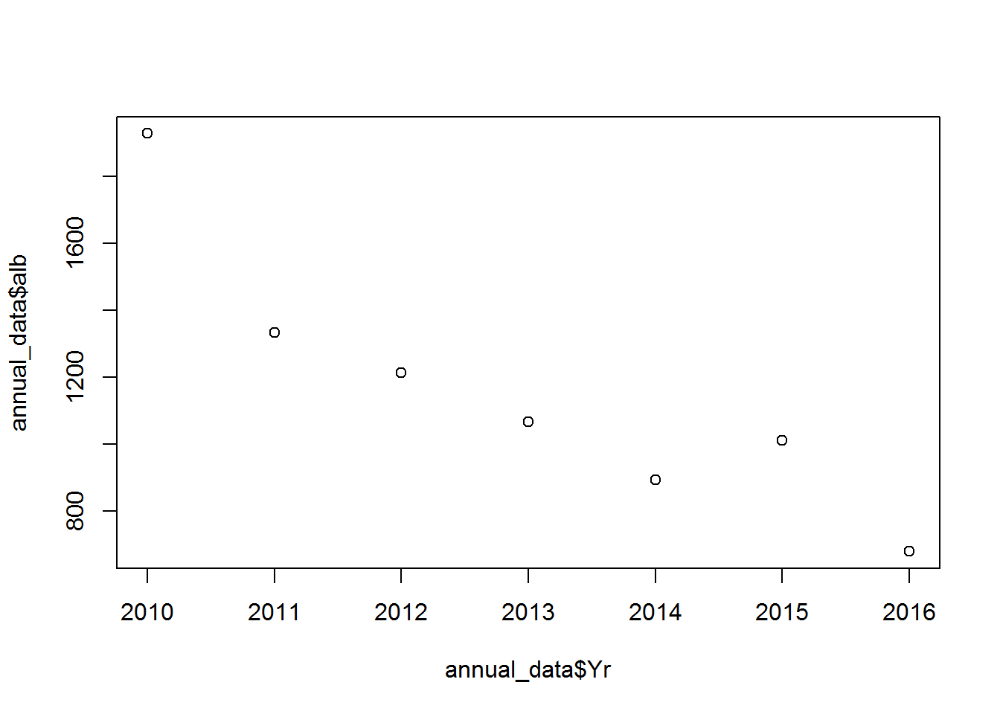

When you manipulate data in Excel usually you physically move columns of data around and use pivot tables to summarise things.
In R there are many ways to manipulate data without altering the underlying dataset (unless you call it the same name ot save over it). In this session we will show you two different packages that are helpful for manipulating your data.
To start off we will set our working directory, load the required packages and import the data.
#setwd("C:/Users/YOURNAME/Documents/R_workshop/workshop_material/exercises/data_manipulation")
catch_effort_data <- read.csv('sample_data.csv')Check the data that you have loaded to make sure you have the correct data set and that it was imported as expected:
head(catch_effort_data)## Yr.Month Yr Month Vessels Trips Sea.Days Hooks.100 ALB.mt BET.mt
## 1 2010-01 2010 1 9 101 13 1790 241.63958 4.922446
## 2 2010-02 2010 2 16 89 21 1685 70.58278 1.537357
## 3 2010-03 2010 3 9 93 22 1688 67.66562 6.242182
## 4 2010-04 2010 4 11 102 17 2836 109.43606 10.358611
## 5 2010-05 2010 5 17 167 33 3446 333.18782 17.738877
## 6 2010-06 2010 6 11 161 28 3327 262.93567 16.185670
## YFT.mt OTH.mt ALB.no BET.no YFT.no OTH.no
## 1 7.497130 43.80626 18680 253 959 227
## 2 5.039798 21.12126 3639 90 296 133
## 3 4.291998 18.62458 4791 326 187 100
## 4 4.558048 18.19926 5609 301 172 80
## 5 17.786435 30.26229 22843 853 900 176
## 6 16.482259 31.17723 10351 839 856 193tail(catch_effort_data)## Yr.Month Yr Month Vessels Trips Sea.Days Hooks.100 ALB.mt
## 76 2016-04 2016 4 6 95 16 2281 70.73303
## 77 2016-05 2016 5 5 91 17 2879 107.17599
## 78 2016-06 2016 6 7 92 10 2230 109.05733
## 79 2016-07 2016 7 5 79 11 2083 83.25952
## 80 2016-08 2016 8 6 63 10 1940 66.79765
## 81 2016-09 2016 9 2 39 7 986 39.58645
## BET.mt YFT.mt OTH.mt ALB.no BET.no YFT.no OTH.no
## 76 8.7400530 14.575810 11.75672 5960 505 751 47
## 77 13.9960977 11.515001 13.79641 11506 1125 901 62
## 78 7.6175485 12.132032 16.36643 6372 657 519 79
## 79 6.5161283 9.740255 17.97256 5435 255 520 86
## 80 8.3896574 12.587335 21.04455 3103 379 569 118
## 81 0.2260984 7.003854 16.12378 3658 9 268 73Getting some basic information:
# you can get the average using:
mean(catch_effort_data$ALB.mt)## [1] 100.3675# or sum the data
sum(catch_effort_data$YFT.mt)## [1] 1571.912# or you can round the number up:
round(mean(catch_effort_data$ALB.mt), 2) # there the ,2 refers to how many decimal figures you want behind the '.'## [1] 100.37You can do more complex things, for example: You can get the mean of the albacore catch where the catch for that month was above 75
# the bit in the [] is the condition you are placing on the analysis (in this case everything above 75 tonnes)
mean(catch_effort_data$ALB.mt[catch_effort_data$ALB.mt > 75]) ## [1] 131.0082This is how you filter the rows of a data frame the traditional way:
head(catch_effort_data[catch_effort_data$ALB.mt > 75, ]) # add the filtering condition within the first slot before the comma## Yr.Month Yr Month Vessels Trips Sea.Days Hooks.100 ALB.mt BET.mt
## 1 2010-01 2010 1 9 101 13 1790 241.6396 4.922446
## 4 2010-04 2010 4 11 102 17 2836 109.4361 10.358611
## 5 2010-05 2010 5 17 167 33 3446 333.1878 17.738877
## 6 2010-06 2010 6 11 161 28 3327 262.9357 16.185670
## 7 2010-07 2010 7 14 172 40 3228 245.2242 10.974533
## 8 2010-08 2010 8 18 207 44 4158 229.6272 17.419574
## YFT.mt OTH.mt ALB.no BET.no YFT.no OTH.no
## 1 7.497130 43.80626 18680 253 959 227
## 4 4.558048 18.19926 5609 301 172 80
## 5 17.786435 30.26229 22843 853 900 176
## 6 16.482259 31.17723 10351 839 856 193
## 7 22.008948 80.25416 12974 355 1046 392
## 8 23.312057 68.59603 12040 1037 1568 374Note that even though you have just applied a filter on catch_effort_data, the original catch_effort_data remains unchanged. If you want to save a copy of this new filtered catch_effort_data, you need to store it in an object:
# Keep only rows with catch greater or equal to 200 and assign (store) it to an object called xx
catch_effort_big_alb <- catch_effort_data[catch_effort_data$ALB.mt >= 200, ]plyr is a package that can help you manipulate data, sort of like a pivot table in Excel where you can summarise data, e.g. by month, year, country, and then sum or get averages across a set of columns in your data frame.
For example, using our catch and effort data catch_effort_data we can make a table of data summing the catch and effort data by year and month:
library(plyr)
catch_effort_yy_mo <- ddply(catch_effort_data,~Yr+Month, summarise, alb=sum(ALB.mt), bet=sum(BET.mt), yft=sum(YFT.mt), hook=sum(Hooks.100))
head(catch_effort_yy_mo)## Yr Month alb bet yft hook
## 1 2010 1 241.63958 4.922446 7.497130 1790
## 2 2010 2 70.58278 1.537357 5.039798 1685
## 3 2010 3 67.66562 6.242182 4.291998 1688
## 4 2010 4 109.43606 10.358611 4.558048 2836
## 5 2010 5 333.18782 17.738877 17.786435 3446
## 6 2010 6 262.93567 16.185670 16.482259 3327You can do the same if you want to get the average catch and effort by month over the time period of your data frame:
ddply(catch_effort_data,~Month, summarise, alb=mean(ALB.mt), bet=mean(BET.mt), yft=mean(YFT.mt), hook=mean(Hooks.100))## Month alb bet yft hook
## 1 1 95.25882 6.096174 30.30744 2195.714
## 2 2 46.20435 6.226138 16.67016 1648.714
## 3 3 43.57900 8.231454 15.04155 1957.000
## 4 4 81.69371 9.533266 16.16526 2723.857
## 5 5 153.49813 14.854605 29.83772 4054.000
## 6 6 147.77786 10.134886 22.86039 3776.286
## 7 7 149.60473 12.120412 25.44946 4326.857
## 8 8 135.89666 13.387898 16.13055 3869.857
## 9 9 79.43707 7.326493 15.36091 3438.000
## 10 10 82.09987 10.994849 14.73267 3740.333
## 11 11 101.30303 8.857000 14.75685 3487.833
## 12 12 83.11697 7.853599 13.36851 2800.333This is how you summarise the annual catch, but here I have assigned the table (dataframe) to an object so we can use it later.
annual_data <- ddply(catch_effort_data,~Yr, summarise, alb=sum(ALB.mt), bet=sum(BET.mt), yft=sum(YFT.mt), hook=sum(Hooks.100))
head(annual_data)## Yr alb bet yft hook
## 1 2010 1929.1842 114.35397 147.7219 34304
## 2 2011 1334.1896 133.71672 243.0802 38434
## 3 2012 1213.8417 126.10759 182.4774 45725
## 4 2013 1066.7241 64.70292 167.3771 39420
## 5 2014 893.6024 129.27535 328.1482 42230
## 6 2015 1011.7505 134.01550 318.6450 38121You may want to round the values off in the data frame
annual_data <- round(annual_data) # overwrite the existing annual_data with the rounded off version
annual_data## Yr alb bet yft hook
## 1 2010 1929 114 148 34304
## 2 2011 1334 134 243 38434
## 3 2012 1214 126 182 45725
## 4 2013 1067 65 167 39420
## 5 2014 894 129 328 42230
## 6 2015 1012 134 319 38121
## 7 2016 680 79 184 17869or you can do this in one step
annual_data<-ddply(catch_effort_data,~Yr, summarise, alb=round(sum(ALB.mt)), bet=round(sum(BET.mt)), yft=round(sum(YFT.mt)), hook=sum(Hooks.100))
annual_data## Yr alb bet yft hook
## 1 2010 1929 114 148 34304
## 2 2011 1334 134 243 38434
## 3 2012 1214 126 182 45725
## 4 2013 1067 65 167 39420
## 5 2014 894 129 328 42230
## 6 2015 1012 134 319 38121
## 7 2016 680 79 184 17869Have a look at the data in a plot:
plot(annual_data$Yr, annual_data$alb) # a basis scatter plot
## tip: to avoid having to rewrite the name of the dataframe multiple times, use the with() function before calling the plot, e.g.:
## with(annual_data, plot(Yr, alb))test_data<-read.csv("sample_data-long.csv", header = TRUE)
df1<-subset(test_data, test_data$yy == 2012) # get just the data from 2012
df2<-subset(test_data, test_data$yy %in% c(2011:2013)) # get just the data from 2011-2013
df3<-subset(test_data, test_data$yy > 2013) # get just the data from 2014 and up
df4<-subset(test_data, !test_data$Species == "OTH") # get just the data from 2014 and up
df5<-subset(test_data, !(test_data$Species %in% c("ALB","BET", "YFT"))) #check the data
unique(df4$Species)## [1] "ALB" "BET" "YFT"# you can also make a custom function to do something specific
'%not in%' <- function(x,y) !('%in%'(x,y))
df6<-subset(test_data, test_data$Species %not in% c("ALB","BET", "YFT"))
# and you can use external lists
tuna<-c("ALB","BET", "YFT")
df7<-subset(test_data, test_data$Species %not in% tuna)
# df5, df6 and df7 are all the same
# to check the dimentions of the dataframe
dim(test_data)## [1] 324 10#check the columns numbers and names
t(colnames(test_data))## [,1] [,2] [,3] [,4] [,5] [,6] [,7]
## [1,] "Yr.Month" "Yr" "Month" "Vessels" "Trips" "Sea.Days" "Hooks.100"
## [,8] [,9] [,10]
## [1,] "Species" "Catch.mt" "Catch.no"# you can now make up a new data frame based on the test_data
# remember in the [] you reference [rows,columns]
sub_1<-test_data[,c(1:6)] # take test_data columns 1:6 only
sub_2<-test_data[,c(7:10)]# take test_data columns 7:10 only
sub_3<-test_data[c(1:6),] # take test_data rows 1:6 only
#You can also do this by using the column name
sub_a<-test_data[,c("Yr.Month","Yr","Month","Vessels","Trips","Sea.Days")]# take test_data columns 1:6 only
sub_b<-test_data[,c("Hooks.100","Species","Catch.mt","Catch.no")]# take test_data columns 7:10 only
#or you can do a combunation of rows and columns
sub_c<-test_data[c(1,3,5,7,9),c("Yr.Month","Yr","Trips","Sea.Days", "Catch.mt")]Add rows on to the bottom of df4 from df5 Note: for this to work the column names must be the same and there must be the same number of columns in each data frame
df_row_bind<-rbind(df4, df5) Adds columns next to sub_1 from sub_2 Note: for this to work each data frame must have the same number of rows
df_col_bind<-cbind(sub_1, sub_2) reshape2 is another useful way to re-arrange data unto a format that makes it easier to deal with. For example if you wanted to summarise your data by year and species and build a table you can use dcast. In dcast you use value.var to choose the column of data you want to summarise and fun.aggregate to tell the function what to do eg. sum, mean…
require(reshape2)
catch_yr<-dcast(test_data, Yr ~ Species, value.var = "Catch.mt", fun.aggregate = sum )
round(catch_yr)## Yr ALB BET OTH YFT
## 1 2010 1929 114 435 148
## 2 2011 1334 134 244 243
## 3 2012 1214 126 291 182
## 4 2013 1067 65 214 167
## 5 2014 894 129 352 328
## 6 2015 1012 134 297 319
## 7 2016 680 79 147 184Copyright © 2017 Pacific Community. All rights reserved.